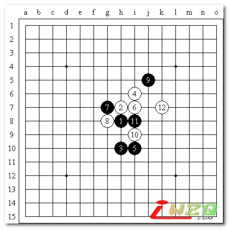
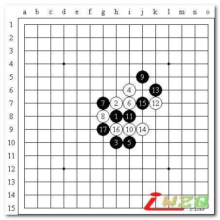
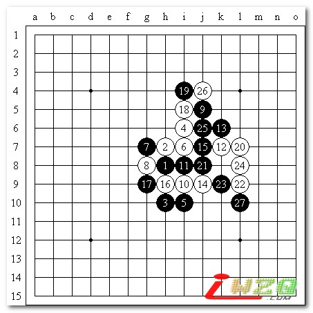
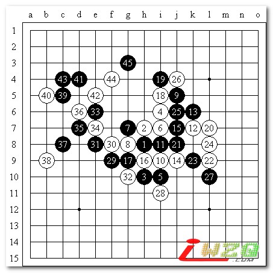
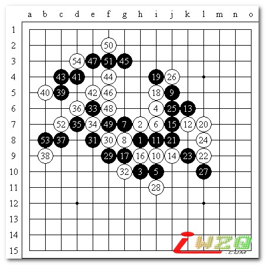
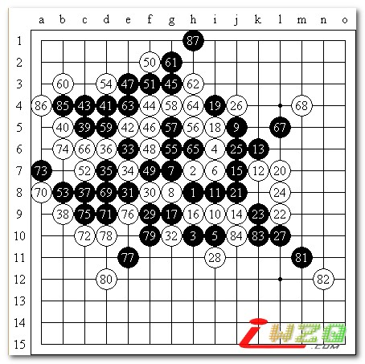

快乐南通一局棋
#1 快乐南通一局棋作者：有志青年 发表时间：2007-6-27 10:15:34
时间：2007年6月24日上午
地点：南通市港闸区区委党校
活动人员：上海、南通、江阴、无锡、常州、常熟、扬州等地棋友
这次去南通的时间虽然不长，但是两地的交流还是非常的成功，交流活动采取的是30分钟和15分钟的包干制，由于时间比较短，相对来说快棋的棋局质量有所下降，在这几盘棋里，唯一对自己比较满意的对局是和顾老师的对局。
这局棋采取的是15分钟包干制，经过猜先后由我布局，我想都没有想就开了瑞星，理由很简单，顾老师是七段，在这么短的时间内如果给优势局或者考必胜，很可能会面临两种尴尬的情况，第一，对手熟悉你开出的布局，交换后秒杀你。第二，对手不是很熟，开局先变招，出谱后仅仅凭15分钟要去防守实在太难，很可能防不住，即使防住了也耗费大量的时间，最后会超时判负。在知道对手比自己强的情况下，尽量寻找一个平衡而且熟悉的布局确实是一个无奈的选择。

瑞星近一段时间被公认为开局平衡多变，中后盘白稍优的局面，因此顾老师没有交换。前11手正常定试，双方加在一起的用时都不到20秒，12手，顾老师考虑的2分钟后选择这个点，这在平时的比赛中比较少见的一个12。说实话真的走大家都熟悉的12效果不见得好，主要双方都熟悉的话难免局势会平稳过度，这样的话和棋的可能性很大，即使15分钟的包干，由于瑞星局面只要一方只防不攻，那么另一方很难占到便宜，记得05年底曾经112手逼和了顾老师后，顾老师一直有心理阴影。因此结合以上原因分析后，不难了解顾老师走这个12的意图了。比赛后查到顾老师的研究记录（这是我的个人研究，也是我很喜爱的变化之一。这个变化是我于1999年想到的。当时较为常见的定式变化的研究已经很普遍，而侧重点主要针对黑棋，因此我感到有必要丰富瑞星白棋的变化。而白12以前的变化大多有了基本的定论，所以只有在12手上做文章。当时我就认为对白12变化的深入研究一定能极大地丰富瑞星的原有定式变化。如今看来，的确如此。这个变化相当复杂，黑棋如何胜，有难度。但是客观地说，黑棋进入中盘后能取得相当大的优势，白棋的策略是将局面尽量复杂化，然后争取和棋或乱中取胜。）

看到这个12后虽然一时有点惊讶，不过好在知道一部分变化，把13走在了12的上面，自己做一个双2去牵制对方一个眠三，比较不错的一手。顾老师简单的回忆了下走出了14手，似乎对手有所准备，我简单的计算了必然的交换，如图这个17后，黑棋局面还不错。接着留给对手的思考18选择的余地就比较多了。这样以后我的时间明显多于对手。

18手顾老师想了有7分多钟选择了4的上面，我粗算了一下19活三后的变化后，觉得21手分断了白棋左右的联系，黑棋基本控制住了局势，往黑有利的方向开始发展，顾老师显然没有想到我会这样交换，实战22，24两手交换明显吃亏不少，如把22改走24的话黑必然先冲掉25这个点然后再防守22这个点，那么白可以不用顾忌左下的黑棋直接防守在8的左边，可能由于时间不多的关系，交换的时候没有注意后面可能出现的局面，这个时候黑已经完全占优了。

28无奈的一手，如防30这个点，那么黑棋只要走K5这个点就必胜了。29和30简单的交换后黑棋开始进攻，连续几手的进攻后，黑棋的优势越来越大，白棋几乎都是唯一防。在45手后，由于白棋在防守过程中消耗了过多的时间只有剩下不到2分钟了，而此时的黑棋还有10多分钟。

46必败，看似白棋有VCF，但黑棋有反，因此我仔细的算清楚之后，47果断活了个三，、顾老师显然看到了败局无法挽回，简单的交换几手后如图54手。这时黑棋看似有2套杀，但是下面那套杀里白有反四，而上面那套杀才是成立的，看清这个局面后我做了胜利的手势出去上厕所了：）嘿嘿
回来后看到顾老师还坐在棋盘前还没投子认负，于是看他时间还有40秒，想捉弄一下^_^

本想靠时间取胜，于是打赌，无奈顾老师拍钟技巧太好，1秒钟能拍2手，结果直到87手5连时还有32秒，不禁让人联想到05年浙江赛上148手拍死五目连珠忧郁的情形。
虽然最后棋是赢了，但是打赌输了，引来众人欢笑。
在回来的路上顾老师还和车上的一位棋迷爱好者交流的几盘，结果狂砍对手，对手不得不佩服的五体投地L
总而言之，在南通和江苏的各位棋友交流还是比较开心的，虽然本人棋力有限，不过希望这盘棋的分析能给各位棋友一些下棋的思路和技巧J
#2 Re:快乐南通一局棋作者：潇洒 发表时间：2007-6-27 18:59:48
汗。。55就两步就四三了。。#3 Re:快乐南通一局棋作者：屏蔽 发表时间：2007-6-27 21:37:56
其实我个人非常讨厌这样下棋的……无聊……